로봇학습 연구 리포트 · CoRL 2026
성공률 66%,로봇은 얼마나 기다렸나
범용 모델 GPT-6 Astra가 로봇 전용 모델을 앞섰다는 발표가 나왔다. 같은 발표에서 한 에피소드의 시계를 들여다보자, 로봇이 실제로 움직인 시간은 5.2초였다.
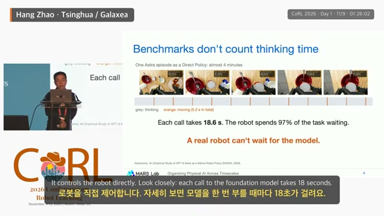
초록
CoRL 2026 공개 녹화를 엮은 영상은 Jim Fan의 ‘겨울’ 농담에서 시작해 ‘여름’이라는 인사로 끝난다. 그 사이 연구자들의 의견이 갈린 지점은 Astra의 점수보다 그 점수가 어떤 일을 맡길 근거가 되는가였다. 시뮬레이션 성적, 연구 에이전트의 활용, 현장 제어 사례를 함께 읽으면 범용 모델이 넓힌 가능성과 로봇에서 따로 검증해야 할 조건이 보인다.
RoboLab-120에서 발표된 Astra 직접 정책과 로봇 전용 모델 π0.5의 성공률.
Astra 직접 정책의 시연 사례에서 모델을 한 번 호출하는 데 걸린 시간.
Gemini Robotics 두 버전의 개발 기간. 발표자들은 단축 요인으로 연구 에이전트 Argon을 꼽았다.
벤치마크 · 충격의 출처
금문교 그림에서 로봇 벤치마크까지
NVIDIA의 Jim Fan은 Astra를 처음 본 로봇 연구자들의 심정을 ‘슬픔의 다섯 단계’에 빗댔다. 결과를 골라 발표했을 거라는 부정, 그래도 내 모션 플래너는 필요하지 않겠느냐는 협상, 그리고 수용. 오프닝 화면에 뜬 문구는 “Winter is coming”이었다.
CMU의 Guanya Shi가 소개한 장면에는 조금 다른 유머가 있다. 사용자가 금문교를 그려 달라고 하자 로봇 팔이 캔버스에 그림을 남겼다. 로봇공학의 ‘ChatGPT 모먼트’를 기다리는 동안, GPT 쪽에서 먼저 로봇을 움직이는 순간이 찾아왔다는 것이다.
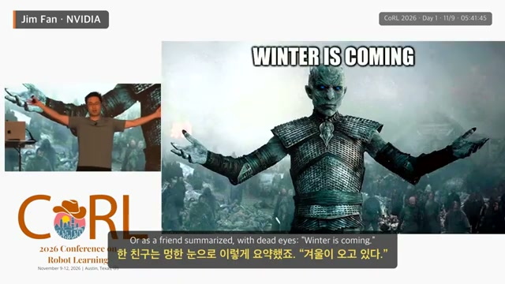
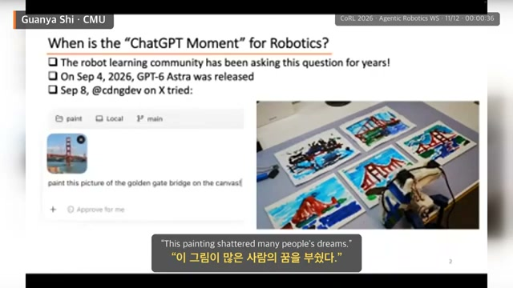
같은 Astra라도 행동을 내는 방식에 따라 점수가 달랐다
| 평가 지표 | GPT-6 Astra | π0.5 |
|---|---|---|
| RoboLab-120 성공률 | 66% 직접 정책 75% 에이전트 방식 | 28% |
| RoboDojo 점수 | 22.5 | 6.9 |
직접 정책은 모델이 관측에서 행동을 바로 출력하는 방식이다. 에이전트 방식은 도구 호출과 결과 확인을 반복할 수 있다. RoboDojo의 수치는 점수이며, 백분율로 환산할 근거는 영상에 제시되지 않는다.
연구 현장 · 모델에 맡긴 일
로봇 팔을 움직이고, 다음 실험을 설계하고
Google DeepMind의 Wentao Yuan이 설명한 제어 루프는 손목 카메라에서 시작한다. 에이전트가 이미지를 보고 명령 코드를 작성하면 로봇이 움직인다. 다음 이미지가 도착하면 그 결과를 보고 다음 행동을 고른다. 이 구조에서 시각·언어·행동 모델(VLA)은 상위 에이전트가 필요할 때 호출하는 도구다. 검색이나 코드 실행처럼, 로봇을 움직이는 기능도 선택지 하나가 된다.
Kanishka Rao의 발표에서는 에이전트가 연구자의 작업에 들어간다. Gemini 4 Argon은 실제 실패 장면을 디지털 트윈으로 옮겨 분석하고, 원인에 대한 가설을 만들어 시뮬레이터에서 개선안을 시험하는 과정에 쓰였다. Rao는 부스에서 시연한 동작 중 일부도 이 과정을 거쳤을 수 있다고 설명했다.
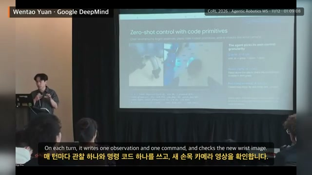
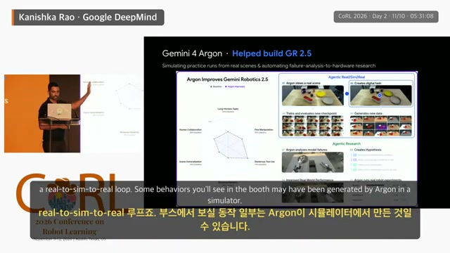
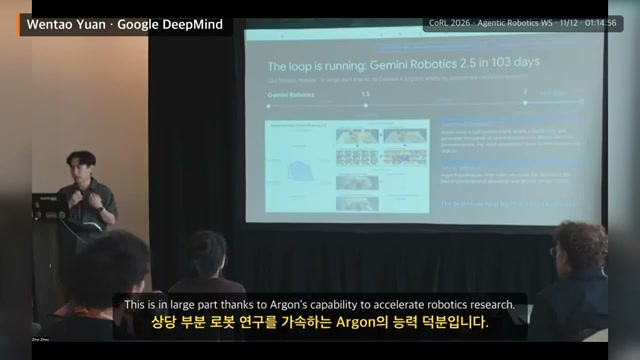
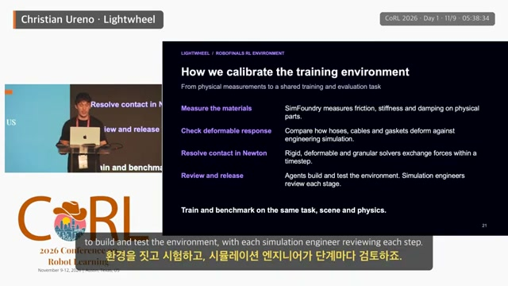
시뮬레이터가 현실과 맞는지는 어떻게 아는가
Lightwheel의 사례에서 검토 대상은 구체적이다. SimFoundry로 부품의 마찰·강성·감쇠를 실측하고, 호스·케이블·개스킷의 변형을 공학 시뮬레이션과 대조한다. Newton에서는 강체·변형체·입자 솔버가 한 타임스텝 안에서 힘을 교환하도록 접촉을 계산한다. 환경을 자동으로 생성해도, 무엇을 현실적인 움직임으로 인정할지는 이 측정과 검토에 달려 있다.
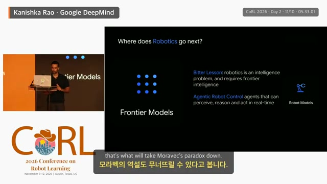
프론티어 지능이 맡을 범위
Rao는 지각하고 추론하고 행동하는 능력이 발전하면, 사람에게 쉬운 신체 활동이 기계에는 유독 어렵다는 모라벡의 역설도 흔들릴 것으로 보았다. XDOF의 Philipp Wu 역시 로봇공학이 기다리던 전환이 원리적으로는 이미 왔다고 해석했다. 뒤이은 연사들이 따져 물은 것은 그 능력을 제시간에, 반복해서 쓸 수 있느냐였다.
실행 기록 · 시간과 안전
모델이 답을 내는 동안에도 현장의 시계는 간다
처음에 66%를 제시한 Hang Zhao가 뒤이어 보여 준 것은 한 에피소드의 타임라인이었다. Astra를 직접 정책으로 실행한 이 사례는 약 4분이 걸렸다. 슬라이드에 표시된 총 움직임은 5.2초. 로봇은 대부분의 시간을 다음 명령을 기다리는 데 썼다.
발표자가 한 에피소드에 대해 제시한 대기 비율. 모델 호출당 18.6초가 걸렸다. 이 타임라인만으로 전체 벤치마크의 평균 대기 시간을 추정할 수는 없다.
“A real robot can’t wait for the model.”Hang Zhao · 05:44 발표 슬라이드
MIT의 Leslie Kaelbling은 이를 생활 속 시간으로 옮겼다. 한 시간 반 뒤에 정답이 나와도 버스는 이미 떠났고 저녁은 타 버렸을 수 있다. Dexmate의 Tianyu Li는 물리적 실수의 비용을 짚었다. 코드 변경은 되돌릴 수 있지만, 물체와 충돌한 로봇에는 git revert가 없다. 위험을 감지하고 반응하는 기능이 로봇 가까이에 있어야 하는 이유다.
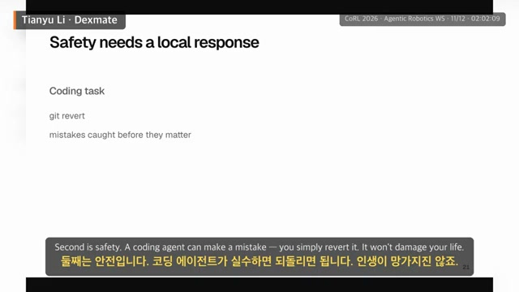
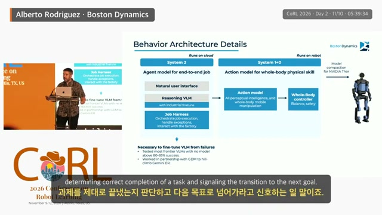
아틀라스에서 어려웠던 판단은 ‘이제 다음 일을 해도 되는가’였다
Rodriguez에 따르면 시험한 프론티어 시각·언어 모델(VLM) 가운데 작업 완료와 다음 목표 전환을 필요한 신뢰도로 판정한 모델은 없었다. 슬라이드는 시험 모델의 성공률 상한을 80~85% 수준으로 설명하고, 실패 사례를 이용한 미세조정이 필요했다고 적었다. 이는 아틀라스의 해당 판단 과제에서 나온 수치다.
배포 데이터 · 현장에서 배우는 것
더 강한 모델도 공장에서는 새로 배운다
Walden Robotics의 Russ Tedrake는 베이스 모델이 빠르게 좋아진다는 전제에서 회사를 설계했다고 말했다. 그의 전망에서 중간 학습용 데이터는 널리 구할 수 있게 되고 필요한 양도 줄어든다. 반면 어느 공장의 어떤 작업에서 실패했는지를 담은 배포 데이터는 더 귀해진다. 아무리 능숙한 매니퓰레이터라도 처음 들어간 공장에서는 현장을 배워야 한다는 설명이다.
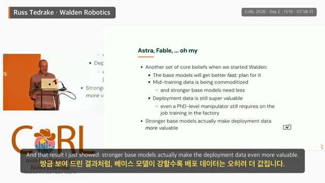
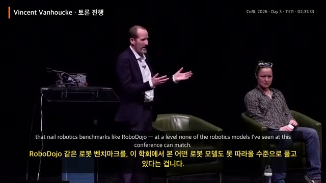
한 시간 동안 몇 번이나 성공했는가
Chelsea Finn(Stanford/PI)은 코딩 에이전트가 신뢰도에 맞춰 개선된 뒤에야 상업적으로 유용해졌다는 점을 들었다. 로봇에서도 대량의 로봇 데이터로 반복 수행의 신뢰도를 높여야 한다는 주장이다. Pulkit Agrawal(MIT/EKA)은 접촉이 많은 조작과 물체의 동역학을 지목했다. 모델이 폭넓은 지식을 학습했어도 이런 상호작용을 담은 데이터는 부족하다고 보았다.
Agrawal이 제안한 지표는 처리량이다. 이를 운용 단위로 풀어 쓰면, 같은 관측 구간에서 시간당 시도 횟수 × 성공한 시도의 비율 = 시간당 성공 건수다. 모델 호출을 기다린 시간까지 관측 구간에 넣으면, 대기와 실패가 각각 작업량을 얼마나 줄였는지 살펴볼 수 있다.
시사점 · 다음 현장 시험
성공 판정 옆에 남겨야 할 기록
이 논의를 굴착기나 건설 장비의 현장 시험에 적용한다면, 범용 모델에는 상위 작업 계획과 실패 판정 보조를 맡기고 즉각적인 제어와 안전 반응은 온보드에서 처리하는 설계를 검토할 수 있다. 해당 장비에서 검증된 결과는 아니며, 발표 사례에서 도출한 설계 가설이다. 시험 기록에는 다음 세 항목이 함께 있어야 이 가설을 평가할 수 있다.
- 작업 시간과 대기 비율. 작업 시작부터 완료까지 걸린 시간, 모델 호출별 지연, 전체 시간 중 대기가 차지한 비율을 기록한다.
- 판정 오류와 실패 비용. 끝나지 않은 작업을 완료로 판정한 횟수와 현장에서 되돌릴 수 없는 실패의 비율을 구분한다.
- 접촉 조건과 처리량. 어떤 물체와 접촉할 때 실패했는지 배포 기록에 남기고, 같은 조건에서 시간당 성공 건수를 비교한다.
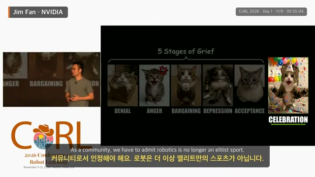
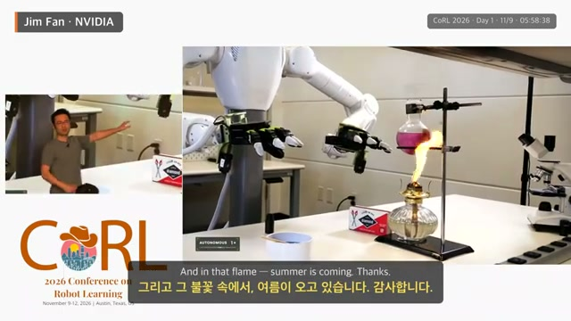
CMU의 Yonatan Bisk가 걱정한 것은 연구자들이 과제를 다루기 쉽게 만드는 동안 로봇공학의 흥미로운 부분까지 덜어냈을 가능성이었다. Jim Fan은 같은 순간에서 더 많은 사람이 연구에 들어올 기회를 보았다. 그가 마지막에 꺼낸 비유는 무너진 정원의 담장이었다.
금문교를 그리게 한 사람이 다음 실험에서 그 그림을 몇 분 만에, 몇 번이나 다시 그릴 수 있는지 묻는다면 어떨까. 낮아진 진입 장벽과 현장 연구의 깊이는 그 질문 안에 함께 들어 있다.